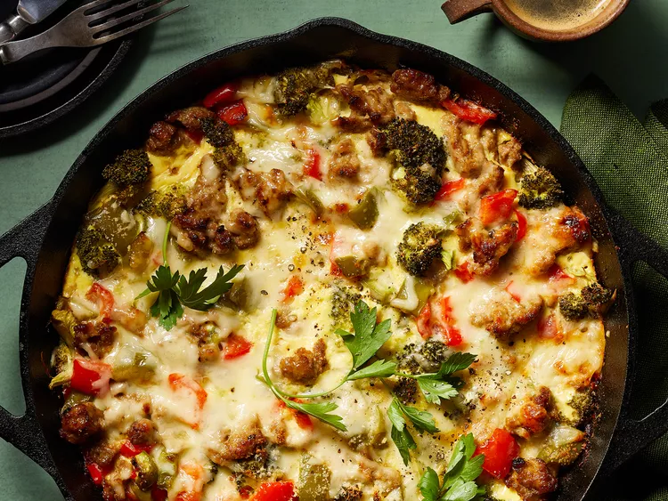

This Breakfast Casserole is wonderful and simple to put together with Cauliflower Tot base, Eggs, Turkey Breakfast sausage, and Cheddar. Perfect breakfast casserole for any day!
This casserole can be assembled and chilled up to a day before baking. Just add 10 minutes to the baking time.